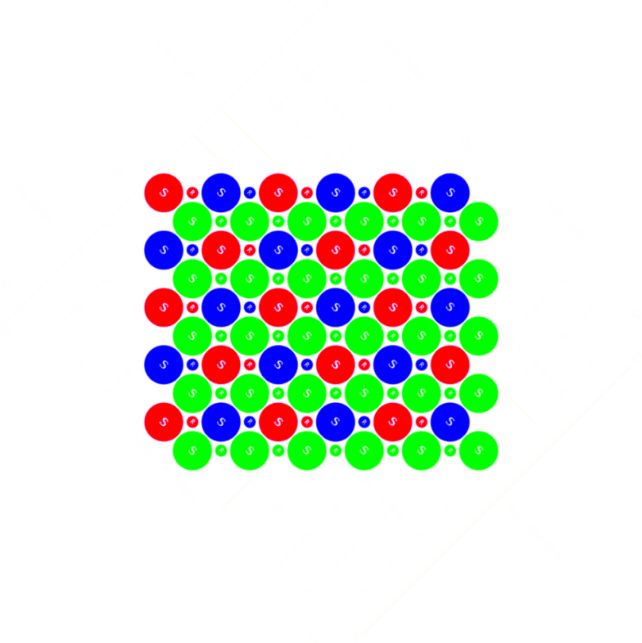

Formato Raw de la S5 Pro
Introducción
Antes de empezar debo aclarar que este artículo no pretende ser una especificación completa del formato raw de la S5 Pro, más bien se trata de una guía, la cual permitirá a los usuarios de esta cámara acceder y modificar directamente la información recogida por los captores de ésta.
La S5 Pro se caracteriza principalmente por su sensor, denominado por la marca como "Super CCD SR II". Como podemos ver en la siguiente ilustración, el sensor se compone de dos tipos de captores, llamados S y R. Los captores de tipo S son más grandes que los de tipo R, estando estos destinados a captar la mayor parte de información que compondrá la imagen final, ya que debido a su mayor tamaño podrán capturar mayor cantidad de luz que los captores de tipo R.
Los captores de tipo R con su menor tamaño, capturarán menor cantidad de luz que los S, posibilitando recuperar información en el caso que los captores de tipo S se vean saturados de luz. En una captura, el sensor obtiene dos imágenes totalmente independientes, una formada por los captores de tipo S y otra formada por los captores de tipo R.

Además de tener dos tipos de captores, hay algo más que caracteriza al Super CCD SR II, se trata de la distribución que siguen los citados captores. En los sensores convencionales los captores se distribuyen en forma de cuadrícula.

El motivo de esta distribución es bastante sencillo, se debe a que todos los dispositivos que nos permiten visualizar imágenes siguen este mismo esquema, de forma, que si queremos visualizar una imagen en ellos, ésta debera adaptarse a la cuadricula. Si un sensor no siguiese este esquema, no sería posible visualizar directamente las imágenes obtenidas a través de él sin realizar un proceso previo de interpolación. El Super CCD de Fujifilm no sigue el esquema expuesto, ya que debemos de considerar al conjunto de captores S y R de forma independiente, de forma que para poder visualizar las imágenes obtenidas a través de él, es necesario realizar una interpolación previa.
No obstante si giramos 45 grados el sensor, podemos observar como sería posible visualizar directamente las imágenes obtenidas a través del Super CCD.

Una vez realizada la introducción al sensor, procederemos a explicar como almacena la S5 Pro los valores asociados a los captores S y R en los ficheros raw.
Especificación del fichero RAW:
Como expliqué anteriormente la S5 Pro obtiene dos imágenes independientes, cada una asociada a un tipo de captor (S y R). No obstante la obtención de la imagen proveniente de los captores R no siempre se lleva a cabo, dependiendo esto de los parámetros de configuración que hayamos establecido en nuestra máquina en el momento de capturar la imagen, por tanto, en el fichero raw podrán existir una o dos imágenes. Una forma rápida y fiable de conocer si un fichero raw contiene la imagen proveniente de los captores R, es observar el tamaño de este. En el caso de que el fichero tenga 12MB (aprox), éste solo contendrá la imagen proveniente de los captores S, si por el contrario el tamaño del fichero es de 24MB (aprox), entonces el fichero raw contiene la imagen proveniente de los dos captores.

Las dos posibles imágenes contenidas en el raw, se almacenan independientemente. A partir de este momento supondremos que el raw que queremos decodificar tiene las dos imágenes contenidas, ya que los ficheros raw con solo la imagen de los captores S pueden ser considerados un caso particulas del que trataremos.
La primera de las dos imágenes que encontramos en el fichero, es la generada por los captores S, la ubicación de dicha imagen queda especificada por XXXXXXXX en el siguiente esquema de memoria (las direcciones están expresadas en base decimal):
| Dirección | Contenido |
|---|---|
| … | … |
| 99 | … |
| 100 | raw offset S = XXXXXXXX (4 Bytes) Big Endian |
| 104 | … |
| … | … |
Para proseguir con la especificación es necesario definir algunos valores asociados al fichero raw y al sensor:
- widths = 4288
- widthr = 4286
- height = 1440
- raw width = 4352
- raw height = 1444
- top margin = 2
- left margin = 32
A partir de la posición XXXXXXXX encontraremos la imagen proveniente de los captores S bajo el siguieCnte esquema:
{kind=link}
Los captores de la S5 Pro, codifican los valores obtenidos en 14 bits, no obstante a la hora de almacenar en el fichero estos 14 bits, la camara lo hace dentro de una palabra (16 bits) codificada en Little Endian. Por tanto cada una de las celdas representa una palabra (16 bit). La estructura se encuentra codificada secuencialmente en el fichero a partir de la dirección XXXXXXXX, de forma que en el fichero aparecerán secuencialmente cada una de las "raw height" filas, y dentro de cada una de ellas aparecerán secuencialmente los valores de las "raw width" columnas.
Como podemos observar en la ilustración, lo valores obtenidos por los captores (coloreados de rosa) se encuentran rodeados de unos margenes que deberemos de obviar.
La imagen proveniente de los captores R, aparece justo después de la imagen asociada a los captores S, de forma que:
- raw offset R = XXXXXXXX + (raw height * raw width * 2)
Donde el "2" es el tamaño en bytes de una palabra. La imagen asociada a los captores R sigue el mismo esquema que la imagen proveniente de los captores S, solo que apartir de la posicion "raw offset R". No obstante deberemos de tener en cuenta que el valor de width no es el mismo para las dos imagenes.